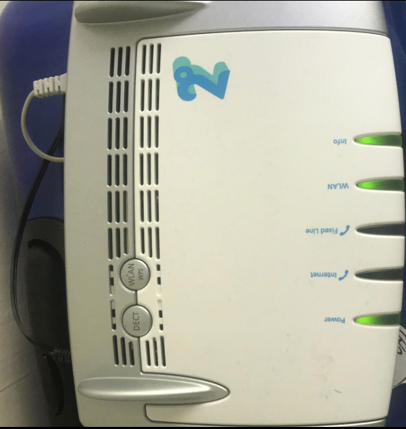
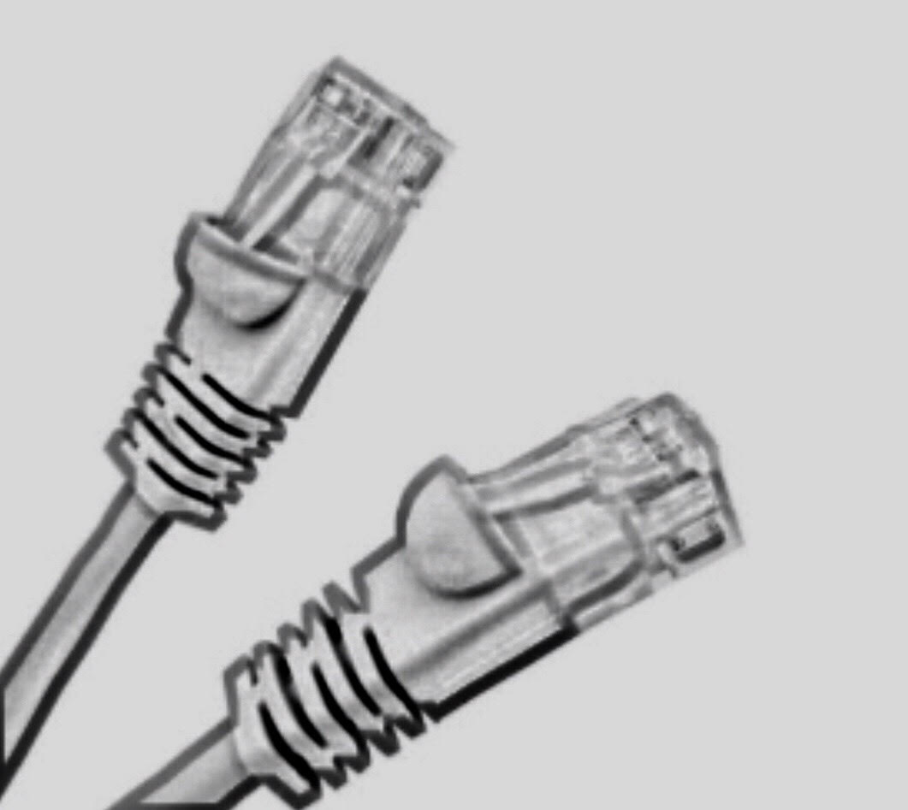
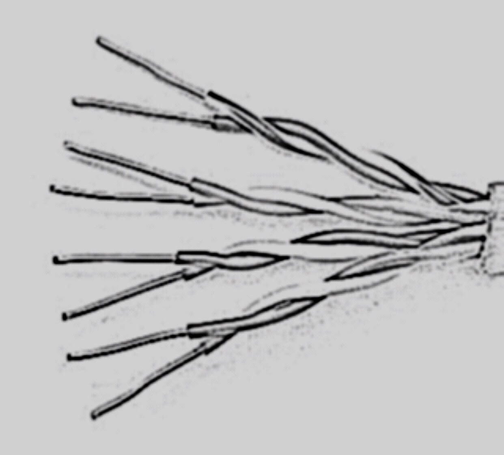
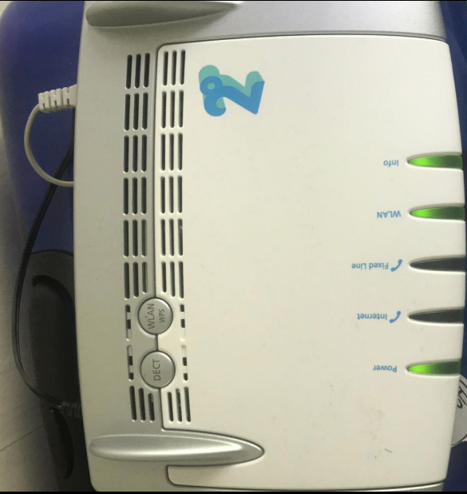
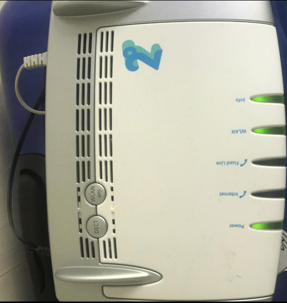

A wireless router is a device that performs the functions of a router and also includes the functions of a wirelessaccess point. It is used to provide access to the Internet or a private computer network.
A local-area network also known as LAN is a computer network that spans a relatively small area. A LAN is mostly often confined to a single room, building or groups of buildings. One LAN can be connected to other LAN’s over any distance via telephone, lines and radio waves.
Networking cables are networking hardware used to connect one network device to other network devices or to connect two or more computers to share printers, scanners etc. Different types of network cables, such as coaxial cable, optical fiber cable, and twisted pair cables, are used depending on the network's physical layer, topology, and size.
Infrastructure of Wellington
Here are some images and drawings of infrastructures in Wellington

Wireless modems
Spark: The Spark HG659b offers both the standard 2.4Ghz band and the uncongested, blazing fast 5Ghz band. It’s compatibility for all devices as well as the ability to better manage data hungry applications.
2 degress: The AVM 7490 moden is designed to keep your business network running at top speed. Gigabit LAN and USB 3.0. It’s also optimised for the 2degrees broadband network and works on all access types (ADSL, VDSL or Fibre).


Network Cables
Networking cables are networking hardware used to connect one network device to other network devices or to connect two or more computers to share printers, scanners etc. Different types of network cables, such as coaxial cable, optical fiber cable, and twisted pair cables, are used depending on the network's physical layer, topology, and size.
Twisted cables is a form of wiring in which pairs of wires (the forward and return conductors of a single circuit) are twisted together for the purposes of canceling out electromagnetic interference (EMI) from other wire pairs and from external sources. This type of cable is used for home and corporate Ethernet networks. Twisted pair cabling is used in short patch cables and in the longer runs in structured cabling.
 
